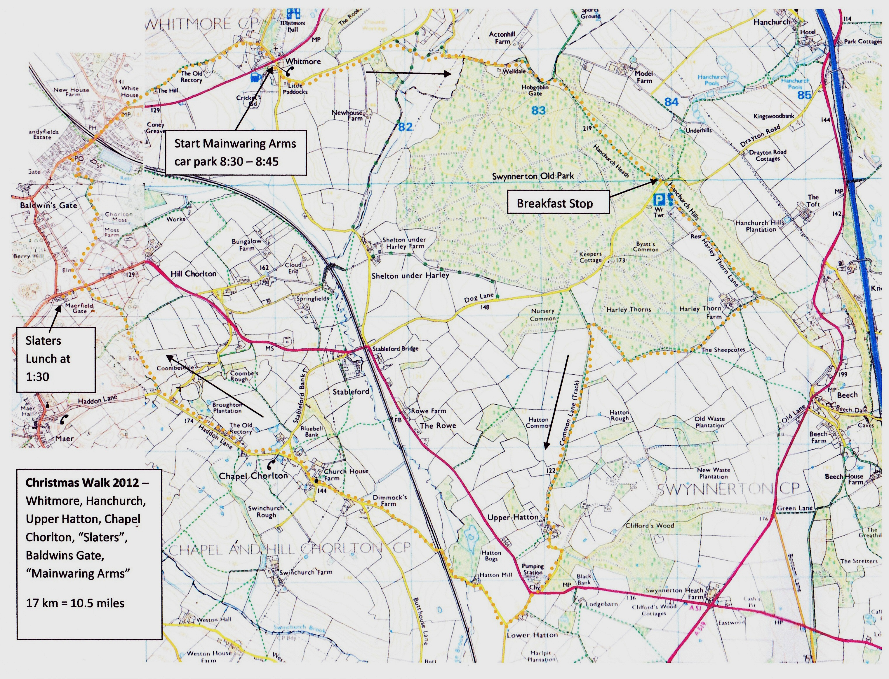

79 Xmas Sqwalk 2012
Whitmore, Hanchurch, Upper Hatton, Chapel Chorlton, Baldwins Gate
10.5 miles
28 were up for it:
Yupmeister, Mid Week Tone (soon to be Anytime Tone), Pedro, Dasher, Debri, Malc Jay, Matt Jay, Euan Jay, Heavy Steve Machine, Jenny Machine, Ali Gee, R G Bargee, Thingy, Mothy, Zolette, GPS-cott, Stig, Paul Hecky Thump, Wendy Hecky Thump, Mark Pickford and Tom Flacket.
In addition, the Mid week girls all came along with their boyfriends: Helen, Medu, Laura, Jay, Rachel, Tom, and friend Duncan.
Spike, Granpop Bill, JayCee, and Slippery belatedly dropped out due to illnesses or family doos.
The Route:


After a couple of group photos outside the white-washed cottages opposite the Mainwaring Arms, we set off, on time, slipping and sliding our way towards Hanchurch Woods. Rachel, in particular, was sliding more than most in her trainers, cursing her dad for choosing such a muddy route. We arrived at our proposed brekky stop, arranged by yours truly, around 9.45, delayed by around 15 minutes due to the mud.
Wow, what a welcome. A clearing amongst the trees had been prepared for us with a central table laden with tea and coffee, chairs and a roaring log fire. Signs had been put up asking us to take a seat and await the buttys, previously ordered.
More hot water and cold drinks were provided and as we settled down a box of red hot buttys were brought out and dished out as the recipients names were called.
This must rate as the best ever brekky stop ever experienced on any of our office sqwalks, so top marks to Tony Latham and daughter from the lodge; and good luck with any future planning applications to become a cafe/refreshments outlet.


Alas there were none available but the folk in the lodge came to his rescue with safety pins, Zolette stitched him up as best she could carefully avoiding his whatnots.
What a 'pin-up' star !!


We eventually set off, skirting the eastern and southern edges of the woods, encountering a few tricky muddy sections before hitting wider and made up tracks.
Heavy, Jenny and Zolette enjoyed a swing around a tree at one point.

The property has now been bought for redevelopment into luxury apartments.


Too deep to wade through we lined up and squirmed along the verge.


The lighter meals were ample for most and the pie of the day comes highly recommended. The quality was excellent with an abundance of vegetables and extra chips. For some reason a couple of meals arrived late but the patience of those waiting was rewarded with even more vegetables etc.


Thanks to Mid week Tone for coming up with the route and for organising the lunch. Shame about the lack of notes, but hopefully the photos will help bring back the memories of yet another fantastic day out. Oh, and the brekky,, have I mentioned that it was probably the best ever.
Cheers
Yup